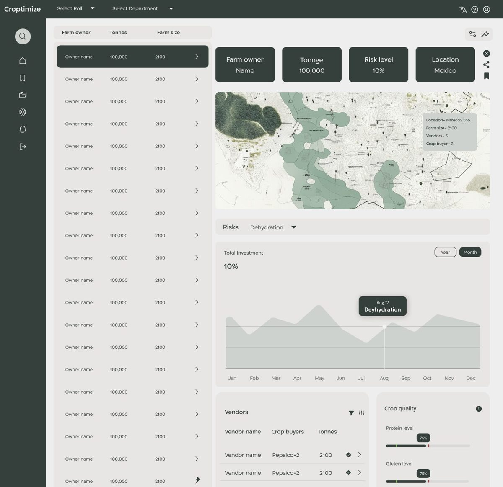
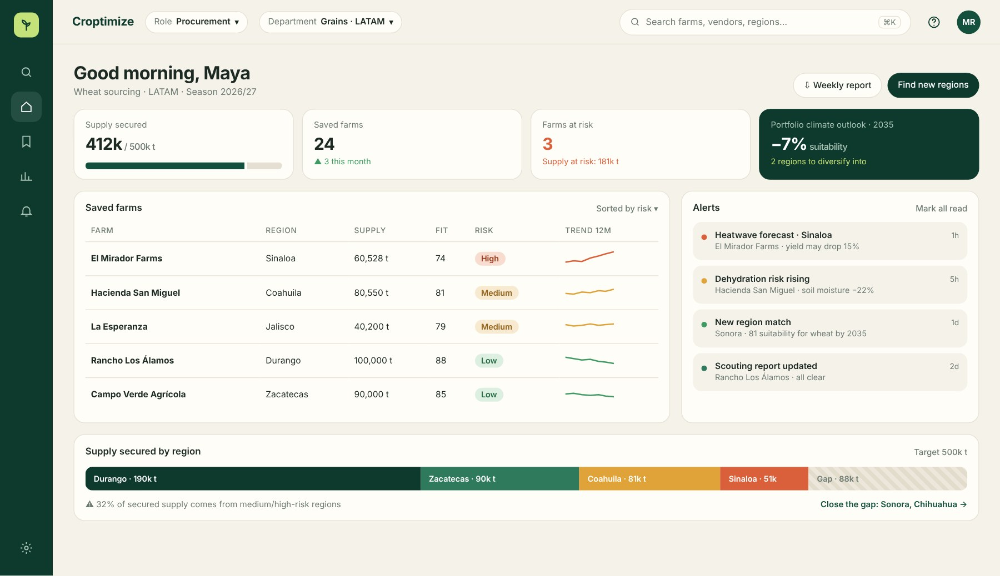
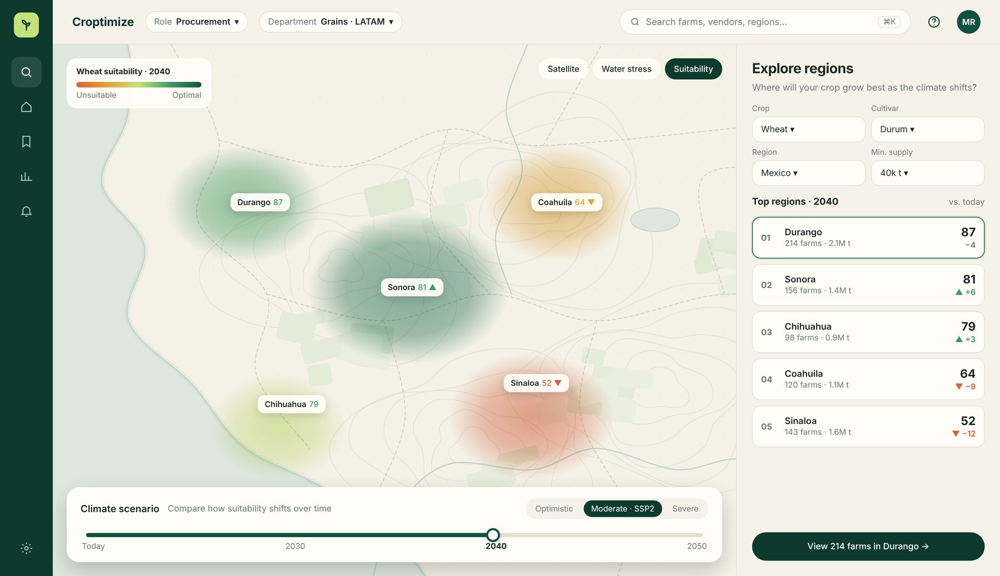
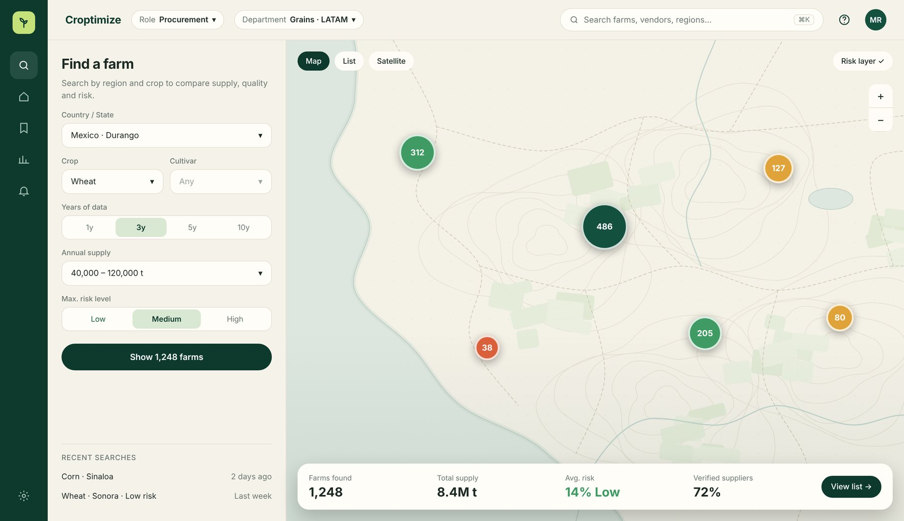
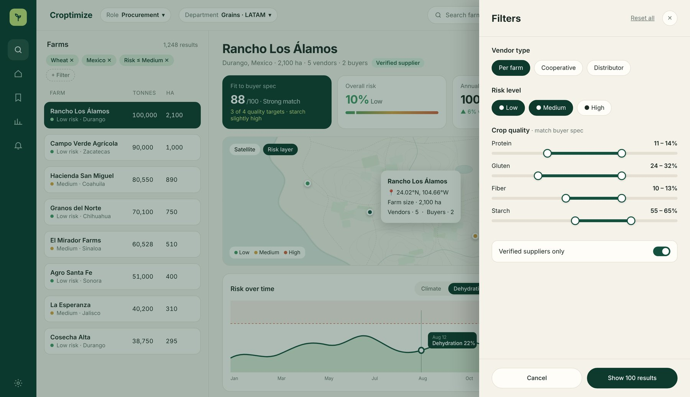
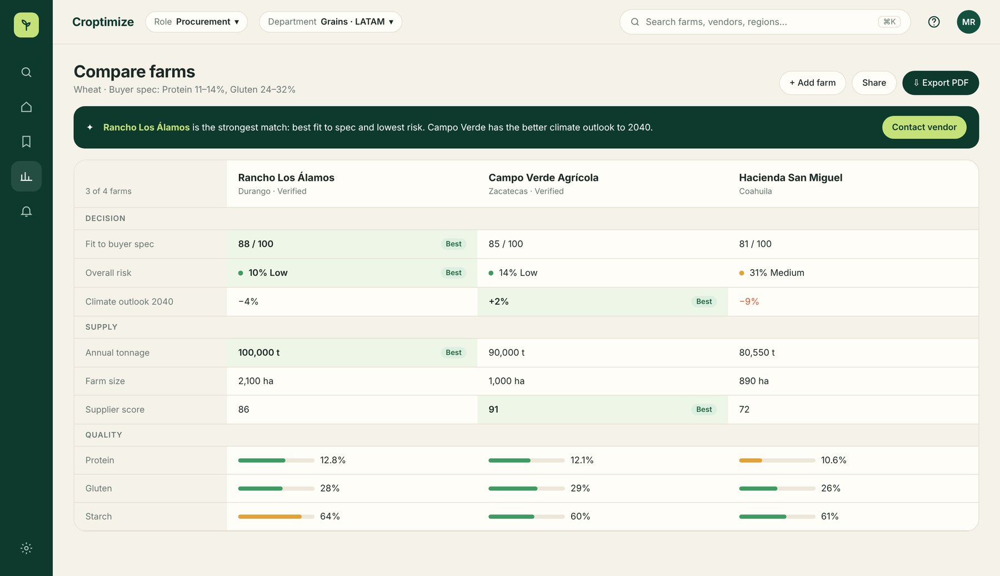

Turning climate data into sourcing decisions
Croptimize is an Israeli climate-tech startup that helps food manufacturers and global brands secure their crop supply as the climate changes.
The platform combines crop models developed at the Hebrew University with AI and geospatial data. It shows where a crop will grow best today and in the coming decades, and how risky each source is.
I designed the web platform: the experience procurement teams use to find farming regions, evaluate farms and suppliers, and make confident sourcing decisions.
Too much data, not enough clarity
Procurement managers work with maps, climate models, crop-quality metrics and supplier records, usually scattered across spreadsheets, reports and separate tools.
They aren't data scientists. They need fast answers, a clear sense of risk, and something they can share with management.
"Where should we source from, and how safe is it?"
What shaped the design
Decisions, not data
Users want a clear answer: does this farm meet our needs or not?
Risk needs context
A number only means something next to the buyer's spec and over time.
Sourcing is comparative
Managers compare several options before they commit.
The future is the product
The real edge is showing how suitability shifts as the climate changes.
From early concepts to a clear system


A platform built around one question
The sourcing picture at a glance
Supply secured against the season's target, saved farms ranked by risk, and real-time alerts like heatwaves or rising dehydration.
- Supply breakdown by region reveals gaps
- 12-month risk trend per farm

See the future of every region
The heart of the product: a suitability map with a climate timeline (Today → 2050) and scenarios, ranking regions by how they gain or lose over time.
- Optimistic, moderate and severe scenarios
- Ranked regions with change vs. today

Search that sets expectations
A focused panel beside a clustered map. Quick-select controls replace long dropdowns, and the button shows how many results to expect.

From data to a decision
The master–detail layout keeps the list in view. A fit-to-spec score answers the main question first; risk, tonnage and climate outlook support it.
- Crop quality vs. buyer's required range
- Scouting report with clear statuses
- Export, compare and save in one place

Filter by the real spec
Range sliders let buyers filter by their actual quality specification. The vendor profile sums up reliability in one score with a clear breakdown.


Confident, shareable choices
Side-by-side comparison with the best value highlighted, a one-line recommendation, and PDF export for management.

Calm, natural, data-friendly
Color
#0D3A2D
#14503E
#C5E17A
#D9E8D2
#F5F2EA
Typography · Inter
Try the full flow
Seven connected screens, from the home dashboard to exploring climate scenarios and comparing farms.
Open prototype ↗Designing for decisions
Complex data doesn't need a complex interface. Every screen was shaped around one question the user needs answered, and everything else supports that answer.
Data shown in the screens is illustrative.